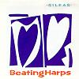

Celtic Lyrics Corner > Artists & Groups > Sìleas > Beating Harps
|  |
Beating Harps
(1988) |
| Tracks : |
1. The Pipers
2. The Silver Whistle 3. Oh Wee White Rose 4. The Solos 5. Miss Gordon Of Gight 6. Puirt A Beul 7. The Shore Of Gruinard 8. Ca' The Yowes 9. The Dogs 10. Beating Harps |